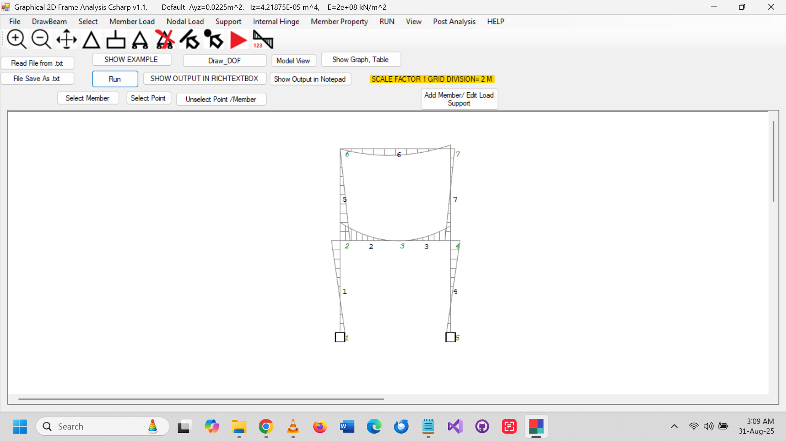
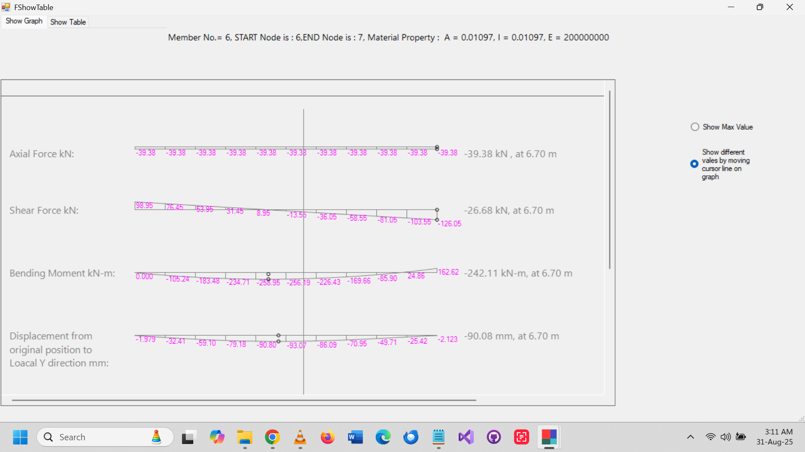

Graphical 2D Frame Analysis is a C#-based educational software for civil and structural engineering students and teachers. It uses the Matrix Method for analyzing multiple 2D frame structures and provides graphical and tabular visualization of displacements, axial, shear, and bending moments. Ideal for learning, teaching, and experimentation.
Features
First-order linear structural frame graphical matrix analysis
Assembly of global matrices for multi-member frames
Graphical and tabular visualization of displacements, axial, shear, and bending moment values
Supports multiple 2D frame structures with various types of supports:
Portal frames
Frames with spring supports
Frames with roller supports (inclined or guided)
Frames with intermediate hinges
Frames with absolute displacement constraints
Developed in C# with an intuitive graphical interface
Open-source and suitable for civil/structural engineering education
Windows OS compatible
Demo Video
Screenshots


Release Notes – v1.0.0.2
Updated source code with performance improvements and bug fixes.
Fixed minor UI glitches in the frame visualization.
Updated Windows installer (.msi).
Optimized calculation of global matrices for faster frame analysis.
Improved documentation and comments in source code.